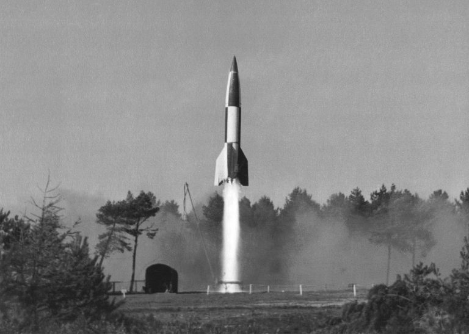

The Development and Usage of V-1 and V-2 Rockets During WW2

T hroughout World War Two, Nazi Germany undertook a bombing campaign upon Great Britain. Part of this period is known commonly as the Blitz, beginning in September 1940 lasting until May 1941 and being conducted by the Luftwaffe. Issues arose with this strategic decision as German military leadership, including Hermann Göring, decided that it was not achieving the desired results. The campaign aimed to destroy major military locations, cripple industrial and economic capabilities and most importantly break the British morale. Another reason this effort was abandoned is the technical difficulties faced with aircraft maintenance, pilot fatigue and most importantly fuel supply. A counter offensive by the British led to the mass bombing of German cities. With these factors a change in tactics was decided, with new weapons being researched and prepared to gain retribution with a supposed “secret weapon” [2].
This secret weapon was a part of a range of the Wunderwaffen (“wonder weapons”) developed and were known as V-weapons (Vergelstungwaffen). These were designed to negate issues found with the bombing campaigns during the Blitz. Instead of using the Luftwaffe to transport and release bombs, long range artillery weapons were used to strategically bomb vital areas and cities. These weapons were manufactured mainly in the Mittelwerk factory with a large majority of the work force, around 10,000 compared to the 2,000 civilian technicians, coming from the Mittelbu-Dora camp located near Nordhausen in Thuringia, Germany. Due to terrible conditions in the camp approximately 20,000 deaths can be attributed to creating these weapons of mass destruction [3]. These weapons were designed to be a pilotless guided aircraft that could carry explosives to their target, saving on the problems that arose with piloted bombing attacks. These V-weapons were named the V-1 and V-2 rockets with each serving similar purposes but had different ways of attempting to achieve results.

The V-1
Background
The first of the V-weapon range began its test flights near the end of 1941 at a site, created to research weapons, named Peenemuende [5] and its first launch against the allies was on the 12th of June 1944. At first there were hopes of launching around 500 per day however shortage of materials and continuous bombing in retaliation caused this goal to never be reached. The main target selected was Britain, but after the mainland invasion of Europe by the Allied forces, many other targets were chosen such as Antwerp and Brussels. In the end 6,725 were fired at England alone, causing the deaths of around 5,000 people and injuring a further 16,000 [6].
However, its effectiveness was called into question, as a large amount did not reach its desired location due to guidance system problems, mechanical failures and anti-missile measures that were set up, successfully destroying around 3,500 V-1 missiles. The initial defences of anti-aircraft guns that had been used for larger objects did not work effectively due to the speed and size of the V-1 missiles. These anti-aircraft guns were later improved due to Bell Labs creating an anti-aircraft predictor fire control system [7] that increased the portion of V-1’s that were shot down significantly, with another method being the use of barrage balloons. The main defence consisted of fast-moving fighters trying to shoot them down with large calibre cannons due to the thick steel skin, or flying close enough to the V-1 missiles to disturb the air flow around it and therefore the gyro sending it off course. One goal that the V-1 did succeed in was its use as a weapon of terror; the V-1 missile produced a loud buzzing sound whilst the pulse engine was working, cutting out suddenly once the missile began its descent, earning it the name of “buzzbomb”.
How it Worked
This missile was created to use a guidance system reliant on an autopilot, working with a pair of gyroscopes controlling the yaw and pitch, a magnetic compass located near the front controlling azimuth and a barometric device controlling altitude [8]. To determine when the intended destination was reached, a small fan blade was attached to the tip of the nose and was turned by the resulting airflow due to its motion, with every 30 rotations counting down to zero from a set value. Upon reaching zero the V-1 began a steep dive until reaching the ground where it detonated with an electrical fuse set to trigger upon impact. The launching mechanism used an apparatus known as a steam generator which used high pressure steam to quickly launch the missile, later a water catapult was used to accelerate the V-1 to the required speeds needed to begin its flight which worked much more effectively. These launch mechanisms were set up across the northern coastline, in the end being able to be set up a site in 2 weeks by a team of 40 men by using a more simplified launch site compared to earlier in the war.
The V-1 was powered by an Argus Pulsejet engine which was developed by Dr Paul Schmidt [5] which produced the characteristic buzzing sound as mentioned before. The design relates closely to a combustion chamber where, as the aircraft flies, air comes in through an inlet valve while fuel vapour is pulled in from a source. From here the mixture in the chamber is ignited by a spark plug, expelling it out of the back of the chamber. This differs from regular engines, where, instead of a petal valve, an array of rectangular spring steel valves was used, due to the lack of skilled labourers that would be needed for the petal valves manufacture. The buzzing sound that the pulse jet engine produced suddenly stopped when reaching its target due to the angle and steepness of its descent, as this caused fuel starvation therefore resulting in a powerless drop to finish off its flight path.

The V-2
Background
The V-2 missile, officially called the Aggregat 4, was developed at Peenemuende just like the V-1. While being made at Peenemunde, production took approximately 10,000 to 20,000 man-hours to complete, whereas later in the Mittelwerk factory, where both V-weapons were mainly manufactured this figure dropped significantly to around 7,500 hours [3]. This weapon was designed to be a more advanced version of its predecessor, the V-1, becoming fully operational in September 1944. In addition to its long manufacturing time compared to the V-1, the cost to build was around 25 times more expensive, coming in at around 100,000 RM (later reduced to 75,000 RM), which is around £2 million today. Numbers for how many V-2 missiles were created are shown in Figure 2 showing the sheer number of weapons made during the periods dated. This rocket travelled at speeds faster than the speed of sound and therefore struck with no audible warning, differing massively to the loud buzzing sounds emitted by the V-1.
This program was impressive for the time from an engineering standpoint but failed in all other aspects. Overall, the cost estimated by a US study comes to a figure of around $2 billion [10], which is the same that was spent on the Manhattan project which brought the allies much greater success. During the entire seven month bombing campaign undertaken, the V-2 missiles were less successful than a single RAF raid. An even more prolific failing is shown by how the death tolls caused by the impact of the V-2 missiles were far less than the deaths caused by the manufacture of the devices. Like the V-1, its main targets were Antwerp in Belgium and London in England. At each location various counter measures were tried with each being not very successful. At first the V-2 was thought to have a radio guidance system, which was still believed even after the inspection of numerous rockets. Efforts were put into trying to jam this system with air-based jammers flying overhead having no effect. Anti-aircraft cannons were also used in parts but were largely unsuccessful with analysis suggesting a 1 in 60 success rate. This is due to the extreme speeds gained and its initial dropping altitude, therefore making it almost impossible for fighters and anti-aircraft cannons to hit. The only effective method seen during the war was to directly attack launch sites, or to provide incorrect information on the location of past V-2 explosion sites via the double cross system [11]. This weapon did not majorly impact the state of the war in any meaningful way, but later did shape the development of ballistic missiles during the cold war, as well as the rockets used in space exploration.

How it Works
The V-2 rocket was the first long-range guided ballistic missile used and demonstrated a leap in technology for the time. Its launch mechanism worked by a mixture of 75% ethyl ethanol and 25% water and liquid oxygen (commonly known as A-Stoff) [12], which were pumped into the combustion chamber by two pumps. These two pumps were powered by steam produced by T-Stoff and a mixture of sodium permanganate and water. This reaction caused an extreme generation of heat which needed to be cooled by ethyl ethanol otherwise it would have destroyed itself in the process of its launch. From this the rocket launched upon reaching around 25 tons of pressure, where the V-2 would reach supersonic speeds eventually exhausting its fuel and starting its parabolic descent back down. The fuel tanks used were also coated in a protective layer of glass wool to stop any ice formation occurring during its flight, as this was a major issue for earlier ballistic missile designs.
The rocket was equipped with two gyroscopes to guide it during the launch period, one used to stabilise and the other to steer. Upon reaching the desired velocity and path, these systems were turned off, beginning its free-fall. After this there was no way to change its course and could fall in a 25 km radius of its expected target, making its accuracy unreliable. The explosive used in the warhead made up around 90% of its total mass, therefore being an efficient use of storage. However, later in the war sometimes it was merely filled with concrete and designed to use its kinetic energy, gained from the free-fall to damage structures, due to shortages in materials. The detonation device worked on impact and would cause extensive damage to infrastructure and people.
Conclusion
In conclusion, the development and usage of V1 and V2 rockets showed the significant progress undertaken at the time and laid the groundwork for many missiles to come. Both were plagued with technical issues causing them to not be as effective as first thought. The V2 especially was a marvel of engineering and paved the way for the future of ballistic missiles, however, was costly and did not succeed in damaging Allied targets. The human cost of these weapons was staggering, with thousands losing their lives. Ultimately, while the V1 and V2 rockets failed to majorly impact the war or turn the tide towards that of Nazi Germany, they left a lasting impact upon the world, shaping the course of post-war technology.
Quiz
Test your knowledge with this article's quiz
References
[1] No 5 Army Film & Photographic Unit, Morris (Sgt) https://commons.wikimedia.org/wiki/File:The_V2_Rocket_BU11149.jpg "Imperial War Museum collections image"
[2] Henshall, Philip (1985). "Hitler's Rocket Sites" New York: St. Martin's Press. p.128. ISBN 9780312388225
[3] Missile, surface-to-surface, V-2 (A-4) (2023) Homepage. Available "here" (Accessed: 09 January 2024).
[4] V-1 missile: Aircraft | (no date) Fiddlersgreen.net. Available "here" (Accessed: 22 January 2024).
[5] Monah University, Schmidt, Daniel, The V1 Flying Bomb Available "here" (Accessed: 08 January 2024).
[6] The National Archives, (2023) British response to V1 and V2, The National Archives. Available "here" (Accessed: 08 January 2024).
[7] ] D. A. Mindell, "Automation's Finest Hour: Bell Labs and Automatic Control in World War II" in IEEE Control Systems Magazine, vol. 15, no. 6, pp. 72-, Dec. 1995, doi: 10.1109/MCS.1995.476388.
[8] Zaloga, Steven (2005). "V1 Flying Bomb 1942–52" Oxford: Osprey Publishing. ISBN 978-1-84176-791-8.
[9] North American Aviation Inc Report No. 46-810, A-4 Propulsion System Analysis, located in the acrchives of the U.S. Space and Rocket Center.
[10] Zaloga, S.J. and Calow, R. (2003) V-2 Ballistic Missile 1942-52. Oxford: Osprey Publishing. (Accessed: 09 January 2024).
[11] Masterman, J.C. (1973) "The double-cross system in the War of 1939 to 1945" London: Sphere Books.
[12] Campbell, E. and Campbell, A.E. Australian War Memorial. " Acknowledgement of traditional custodians" (Accessed: 10 January 2024).
{kind=link}